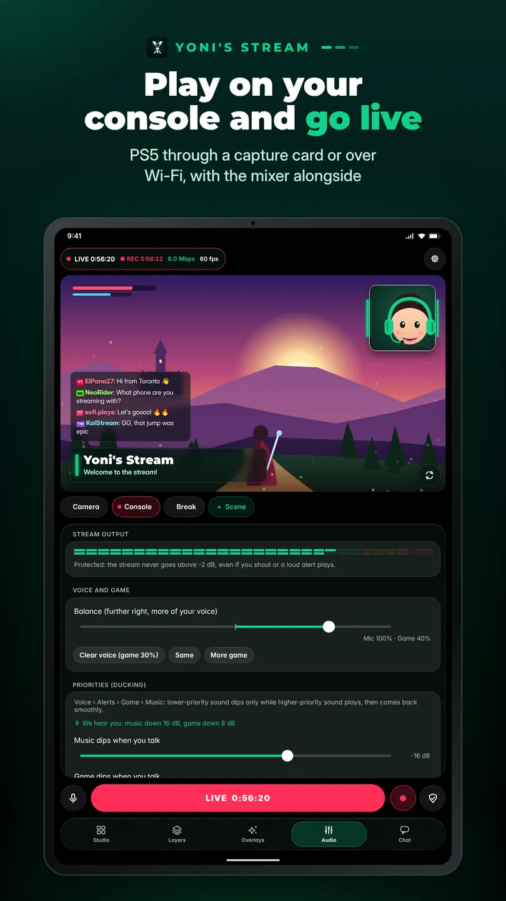
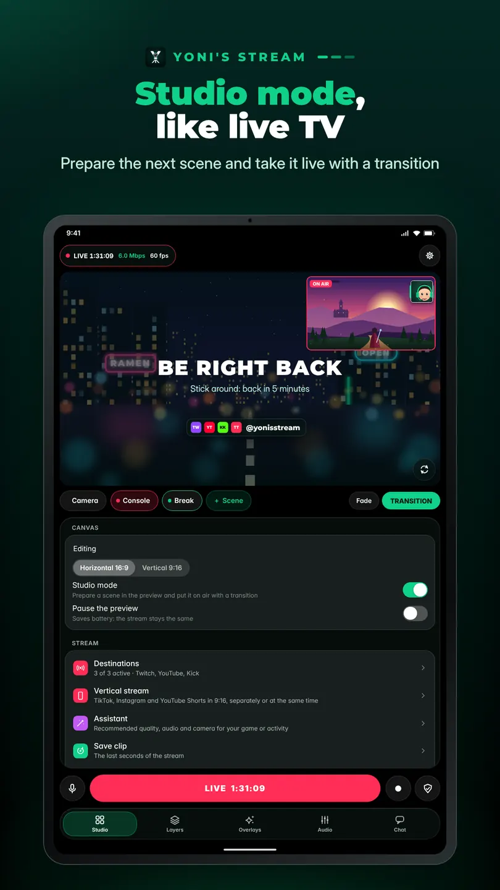

Android용 라이브 방송 스튜디오
라이브 스튜디오를 주머니 속에
휴대폰으로 오버레이를 얹어 Twitch와 YouTube에서 IRL 라이브 방송
라이브 6.0 Mbps · 60 fps
Yoni's StreamYoni's Stream은 Android 휴대폰을 완전한 방송 스튜디오로 바꿔 줍니다. 장면, 레이어, 오디오 믹서, 알림, 멀티스트림을 PC 없이.
스크롤해서 방송 시작
주머니 속 스튜디오라이브 오버레이멀티스트림과 녹화프로 오디오콘솔, 캡처 보드, 카메라스마트 어시스턴트주머니 속 스튜디오라이브 오버레이멀티스트림과 녹화프로 오디오콘솔, 캡처 보드, 카메라스마트 어시스턴트
주머니 속 스튜디오라이브 오버레이멀티스트림과 녹화프로 오디오콘솔, 캡처 보드, 카메라스마트 어시스턴트주머니 속 스튜디오라이브 오버레이멀티스트림과 녹화프로 오디오콘솔, 캡처 보드, 카메라스마트 어시스턴트
스크린샷
앱 미리 보기
스크린샷 언어
주머니 속 스튜디오레이어가 있는 장면: 후면·전면 카메라, 휴대폰 화면과 게임, 이미지, 동영상, 텍스트, 브라우저, 채팅.멀티스트림과 녹화RTMP, RTMPS, SRT로 여러 플랫폼에 동시 송출: Twitch, YouTube, Kick, TikTok LIVE, Instagram 라이브, Facebook, X 또는 내 서버.라이브 오버레이구독, 비트, 레이드, Super Chat, 멤버십, Kicks, TikTok 선물 자동 알림. 효과음과 효과(꽃가루, 하트, 불꽃놀이 등) 포함.콘솔, 캡처 보드, 카메라캡처 보드 없이 Wi-Fi로 PS5·PS4, OBS가 있는 PC 또는 송출용 다른 휴대폰.프로 오디오목소리/게임 밸런스, 더킹, 노이즈 억제, 컴프레서, 출력 리미터.라이브 오버레이Twitch, YouTube, Kick, TikTok, Discord 채팅을 방송에 함께 표시. 음성 읽기 지원.주머니 속 스튜디오가로 16:9와 세로 9:16 캔버스를 동시에. TikTok, Instagram, YouTube Shorts용.스마트 어시스턴트게임이나 활동, 내 인터넷 환경에 맞춰 화질, 오디오, 카메라 위치를 추천합니다. 기능
방송에 필요한 모든 것
휴대폰으로 라이브 오버레이를 얹어 Twitch와 YouTube에서 IRL 방송을 하세요. 오버레이가 들어간 영상도 프로처럼 녹화할 수 있습니다.
01 / 06주머니 속 스튜디오
- 레이어가 있는 장면: 후면·전면 카메라, 휴대폰 화면과 게임, 이미지, 동영상, 텍스트, 브라우저, 채팅.
- 미리보기가 있는 스튜디오 모드와 전환 효과: 컷, 페이드, 슬라이드, 이동, 스팅어.
- 가로 16:9와 세로 9:16 캔버스를 동시에. TikTok, Instagram, YouTube Shorts용.
- 개인정보 보호막: 통화 중이거나 게임에서 나가면 방송 화면을 가립니다.
02 / 06라이브 오버레이
- 바, 자막, 티커, 목표, 카운트다운, SNS 표시. 2000개 이상의 글꼴.
- 구독, 비트, 레이드, Super Chat, 멤버십, Kicks, TikTok 선물 자동 알림. 효과음과 효과(꽃가루, 하트, 불꽃놀이 등) 포함.
- 시청자가 효과와 소리를 낼 수 있는 채팅 명령어.
- Twitch, YouTube, Kick, TikTok, Discord 채팅을 방송에 함께 표시. 음성 읽기 지원.
- 오버레이를 OBS와 Streamlabs로 내보내거나 내 오버레이를 가져오기.
03 / 06멀티스트림과 녹화
- RTMP, RTMPS, SRT로 여러 플랫폼에 동시 송출: Twitch, YouTube, Kick, TikTok LIVE, Instagram 라이브, Facebook, X 또는 내 서버.
- 일시정지 가능한 최대 4K 60fps 녹화와 직전 몇 초 클립 저장.
- 하드웨어 H.264·HEVC, 가변 비트레이트, 자동 재연결.
- 장시간 방송을 위한 발열·배터리 관리.
04 / 06프로 오디오
- 마이크, 게임·앱 내부 오디오, 음악, 효과음을 다루는 믹서.
- 목소리/게임 밸런스, 더킹, 노이즈 억제, 컴프레서, 출력 리미터.
- 바로 쓰는 프로필: 게임과 목소리, 토크, 팟캐스트, 배경 음악, ASMR, 야외 IRL.
05 / 06콘솔, 캡처 보드, 카메라
- USB(UVC) 캡처 보드, Elgato 포함.
- 캡처 보드 없이 Wi-Fi로 PS5·PS4, OBS가 있는 PC 또는 송출용 다른 휴대폰.
- RTSP IP 카메라와 RTMP 액션캠.
- USB 연결 Elgato Stream Deck과 화면 바로가기 버튼.
06 / 06스마트 어시스턴트
게임이나 활동, 내 인터넷 환경에 맞춰 화질, 오디오, 카메라 위치를 추천합니다.




요금제
- 요금제 없음: 장면과 오버레이 준비.
- 5일 무료 체험(신규 계정): 1080p 30fps까지 방송과 녹화, 하루 2시간.
- Deluxe Studio: 1080p 60fps까지, 하루 5시간 방송, 3개 플랫폼 멀티스트림, 자동 재연결.
- Streamer: 모든 것 무제한(4K60, 무제한 장면과 오버레이, 모든 플랫폼, Stream Deck, 캡처 보드와 프로 카메라, 모든 글꼴, 오디오 프로필, 필터, 어시스턴트, 채팅 읽기).
개인정보
광고도 추적도 없습니다. 영상은 내가 고른 플랫폼으로만 가고, 장면과 스트림 키는 휴대폰과 원하면 내 Google 드라이브에 저장됩니다.
하나의 신호, 다섯 개의 출력
어디서나 팔로우하세요
방송, 팁, Yoni's Stream 소식. 좋아하는 SNS를 골라 놓치지 마세요.

여기서 만나요:InstagramYouTubeTikTokTwitchKickInstagram
출력 01

출력 02

출력 03
출력 04

출력 05
K